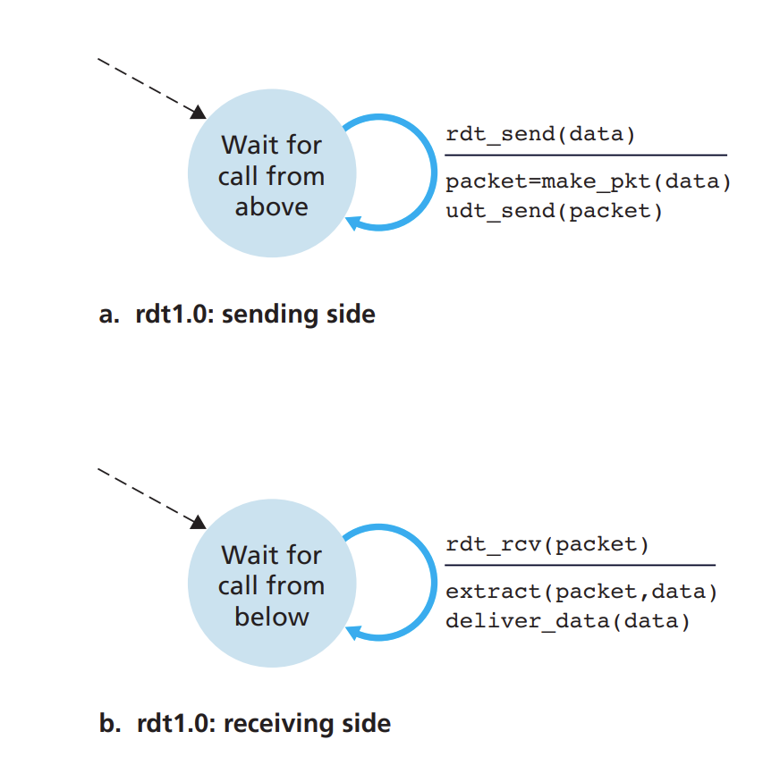
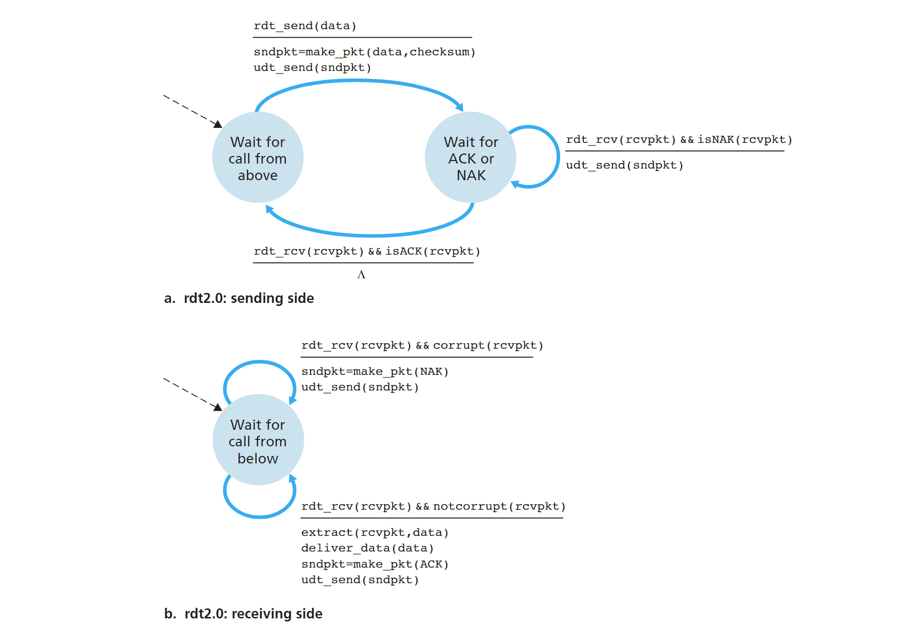
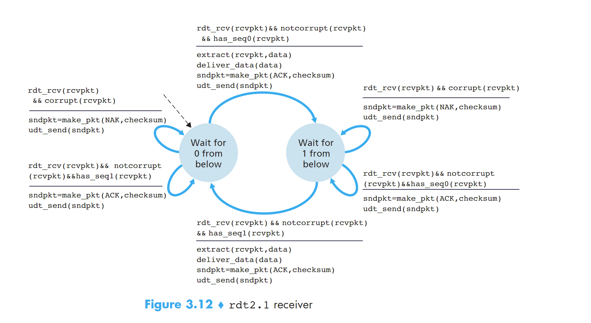
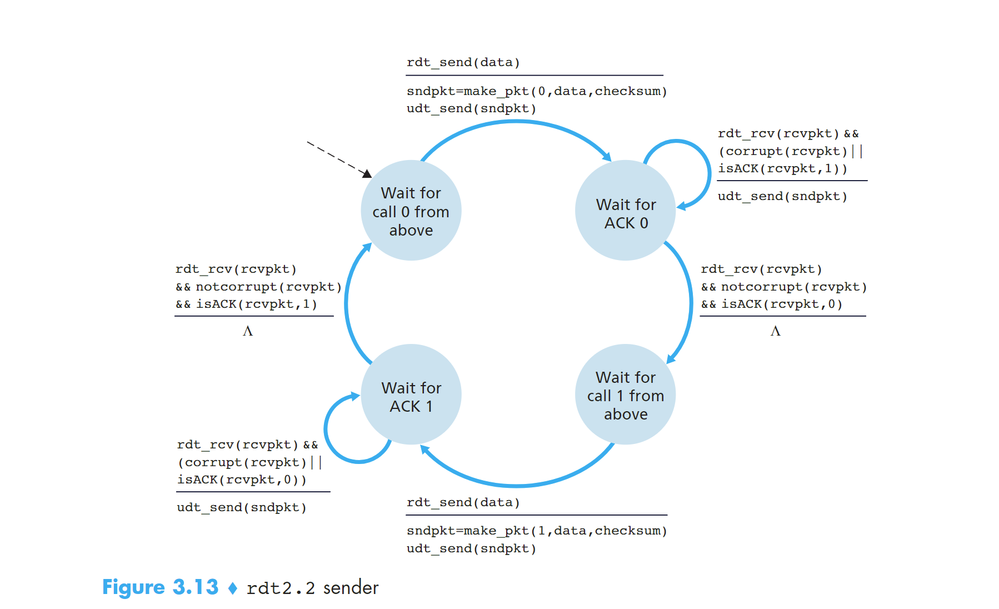
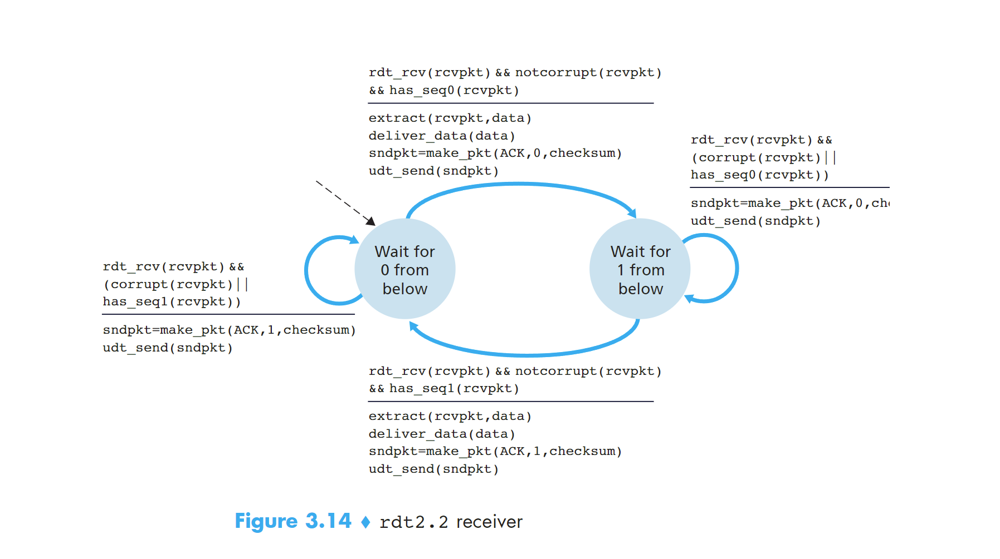
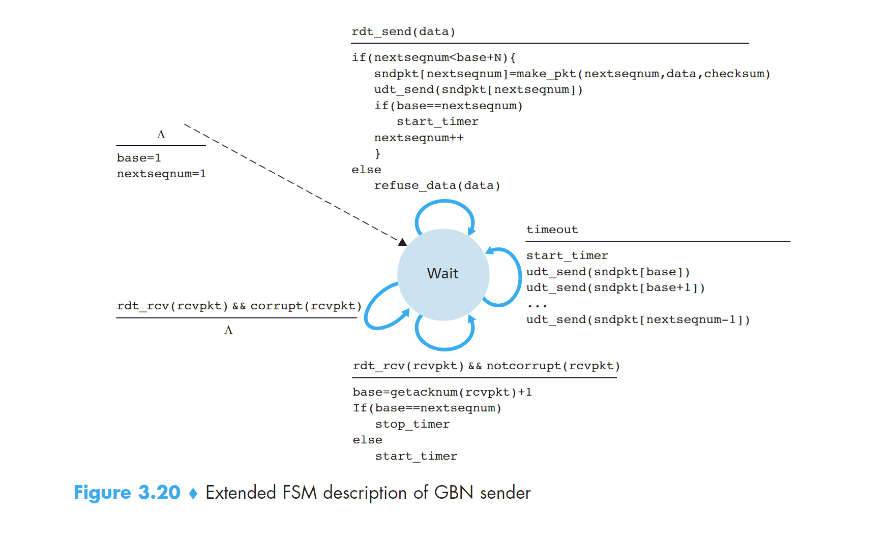
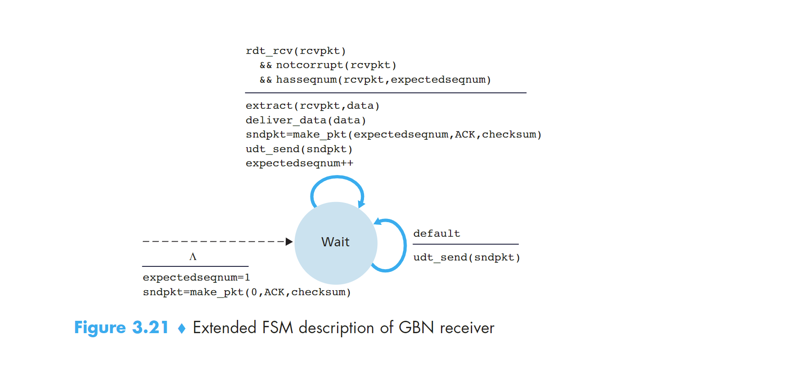
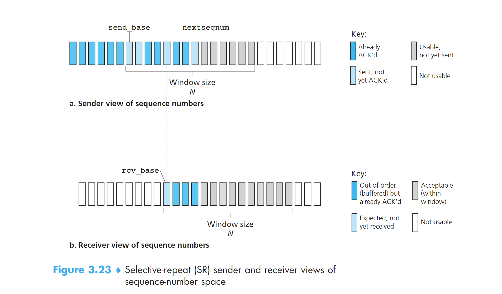

# title: RDTPrinciples
date: 2024-06-14 21:37:06
tags：计算机网络
# 重点：Principles of Reliable Data Transfer
# 1 可靠数据传输服务模型搭建和服务实现
- 提供服务：主机通过应用层在某个进程发送数据到传输层，数据通过可靠的通道 channel 到达另一个主机的应用层的某个接收进程。
- 服务实现：主机发送进程调用 rdt_send () 发送数据到传输层，传输层通过可靠的数据传输协议，使用 udt_send () 发送到链路层，经过不可靠的链路传输到目标主机下的传输层然后调用 rdt_rcv () 进入传输层，最终进入应用层进程。
reliable data transfer protocol
上面提到的可靠的数据传输协议，就是实现上述的服务的过程。比如 TCP 就是一种可靠的数据传输协议。
# 2 建立一个可靠的数据传输协议
这里我们会循序渐进的介绍几种 rdt，每一种都是前一种的完善和升级。
# 2.1 rdt1.0
发送端和接送端各有一个只有一个状态的 FSM，当接收到应用层发送来的数据时，打包成 package 发送到链路层；接收端从链路层接收到 package 解包成 data 发送给上层应用层。

# 2.2 rdt2.0
rdt1.0 是建立在链路层的传输通道不会发生丢包的基础上的，这是不可能的事情，包传递的过程中发生位错误是非常常见的。
rdt2.0 是建立在发送的 package 一定会被接收到但是允许发生 bit 错误。
- positive acknowledgements：确认收到消息
- negative acknowledgements：未收到请求重发消息
使用这两个信息可以使得 sender 针对这两个情况进行不同的动作，这是 rdt2.0 中非常重要的基础。这种可能重传的机制被称为 ARQ
ARQ 协议需要三个额外的协议来处理位错误的问题：
- Error detection 错误检测
- Receiver feedback 接收端反馈
- Retransmission 重传
接下来正式介绍 rdt2.0，首先来看他的 FSM，与 rdt1.0 不同的是，rdt2.0 的 sender side 的 FSM 有两个状态，receiver side 的 FSM 只有一个状态
先看 sender side：两个状态分别为 wait for call from above（1） 和 wait for ack or nak（2）。当处于 1 状态时，当 rdt_send (data) 消息到来时，执行 sndpkt = make_pkg(data, checksum); udt_send(sndpkt); 进入状态 2；当处于状态 2 时，如果收到 rdt_rcv (rcvpkt) && isNAK (rcvpkt), 执行 udt_send(sndpkt) 重新发包；如果收到 rdt_rcv (rcvpkt) && isACK (rcvpkt), 进入状态（1）
再看 receiver side：检查到包损坏，发送 NAK；检查到包完好，发送 ACK 并把 package 解包的 data 发送到应用层。

看上去没什么问题，但实际上有个致命的错误！我们无法保证 ACK 或者 NAK 的位上没有发生损坏。所以我们仍然需要在包含 ACK 后 NAK 的包上添加 checksum。如果确认损坏，我们又该如何处理这种情况呢？
解决方法：
在 data package 中添加 sequence number 序列号，这样 receiver 就可以知道接收的包是不是重发的。
举个例子：stop-and-wait protocol，接收的 package 的 sn 之前遇到过则是重发的，不一样或者增加则是新发的
应用这个解决方法，rdt2.1 产生了，能够很好的解决 ACKNAK 消息丢失的问题。
# 2.2.1 rdt2.1
sender side：
初始状态是 wait for call 0 from above，接收到上层发来的 data，和 0（sn）、checksum 一起打包发送给链路层，进入状态 wait for ACK or NAK 0。
如果接收到反馈的 package，查看发生了损坏或者是 NAK package 重发包；如果没有发生损坏或者是 ACK 进入下一个状态：wait for call 1 from above。
接收到上层发来的 data，和 1（sn）、checksum 一起打包发送给链路层，进入状态 wait for ACK or NAK 1。
如果接收到反馈的 package，查看发生了损坏或者是 NAK package 重发包；如果没有发生损坏或者是 ACK 进入下一个状态：wait for call 0 from above。完成闭环。
这个 FSM 用到的 sn 码只有 0 和 1。
receiver side：

只有两个状态。
初始状态是 wait for 0 from below，接收到链路层发来的包，检查包没有发生错误并且 sn 是 0，解压包把 data 向上层传递。把 ACK 消息和 checksum 打包发送给 sender side，进入下一个状态 wait for 1 from below；
如果接收到链路层发来的包，检查包发生错误，则把 NAK 和 checksum 打包发送给 receiver side； 如果接收到链路层发来的包，检查包没错误但是是序号为 1 的包，把 ACK 和 checksum 打包发送给 sender side。状态没有发生变化；
状态是 wait for 1 from below 时，处理流程和上面是完全对称的。
# 2.2.2 rdt2.2
rdt2.2，与 rdt2.1 不同的是：接收端必须包括被 ACK 消息确认的 packet 的 sequence number，sender 必须检查被接收的 ACK 消息确认的 package 的 sn。也就是说接收端返回的 ACK 和 NAK 消息也带有 sn 序列号，只有符合当前状态的 sn 才可以做出 rdt2.1 的反应。也就是处于状态 1 时收到序号为 0 的包会发送 ACK 但不会把 data 接收而是丢弃了


# 2.3 rdt3.0
现在要开始考虑链路层的传输会有丢包的情况，这是最可能发生的事情，所以现在的应用大多是 rdt3.0 的协议。
伴随着这个问题产生的还有两个顾虑：如何检测丢包以及当丢包时需要做出的反应
我们会把检测丢包和恢复重发的任务放在 sender side
那么如何检测丢包呢？sender side 在一段固定的时间内没有收到发送的 package 的 ACK，就可以认为这个包丢失了，开始重传。如果发送的 package 没有丢失，只是在链路层中遭遇了拥塞导致延迟时间超过设定的 timeout，也会触发重发，这样就会导致 duplicate data packets。幸运的是，可以采用 rdt2.2 的序号机制来无视多余的重发包。
具体流程可以看 FSM

# 3 Pipelined Reliable Data Transfer Protocols
stop-and-wait 类型的协议性能无法满足需求，使用流水线 rdt 协议能提高性能。
流水线模式 sender 和 receiver 都可以发送多个 packet，不需要等待 ACK。为了实现这样的特性采用流水线技术。
实现方法：
- sequence number 的范围可以增长，且每一个在传输的 packet 都有一个独特的 sn。
- sender 和 receiver 设立 buffer 用来发送或者接收多个包。sender 必须设立 buffer 来缓存没有 ACK 的包用来重发。receiver 也需要为接收的 packet 设立 buffer 来缓存
# 4 Go-Back-N GBN
首先确定一点，GBN 协议是一个流水线 RDT 协议。但是，GBN 协议中 sender 会限制 buffer 中未 ACK 的 packet 的数量为 N。
sn 的范围分为三部分。一是已经发送且 ACK 的 sn [0~base-1]，二是已经发送但是没有 ACK 的 sn [ base~nextseqnum-1]，第三是未发送的待分配的 sn [ nextseqnum~n-1]。第二和第三部分之和为 N。
N 也被称为 window size；GBN 也被称为 sliding-window protocol。window size 是可以变化的，比如在 tcp 协议中，发生 congest 时会减小。sn 码在实际操作中是被封装在 section 中的，有位数限制。k 位的 sn 码最大为 2 的 k 次方 - 1。tcp 的 sn 码一共 32bits
GBN 协议的 FSM 表示如下：

sender 在 timeout 后，会从 base 开始重新一轮发包；如果某个 ACK 没收到，那么后面收到的 ACK 是不会更新 base 的，所以就会导致发了很多冗余的 packet。这是个问题。

# 4 Selective Repeat SR
GBN 协议也是存在缺陷的，一个 GBN 协议包的出错或导致大量的包重发活动。SR 协议能够避免不必要的包重发通过让 sender 只重发那些被发送端认为是出错的丢包的 packet。
为解决这个问题，SR 升级了 sn 码的属性，在【base~nextseqnum 中允许存在 ack 的 sn 并且做上标记】。SR 的 receiver 会承认 out-order 的 packet 并且发送 ACK，sender 也会接收这些 ACK。但是 receiver 的 buffer 仍然会保留这些被接受的 packet 直到比他的 sn 小的 miss 的 packet 都被接收到才不保留。

rcv_base 取决于期望接收到的 packet 的 sn，也就是被接受且发送 ack 的下一个 sn

SR 和 GNB 的不同在于，所有的接收到 packet 都会被打上 ack，base 会跳跃到最小的未被接收到的 sn 上，可能一跳一大段！但是 GBN 就不行，他没有处理 out-order 的 packet 所以一旦丢包 base 就会卡住，并且 timeout 后又从 base 开始发包一步一步的递增。SR 的 base 是具有跳跃性的！